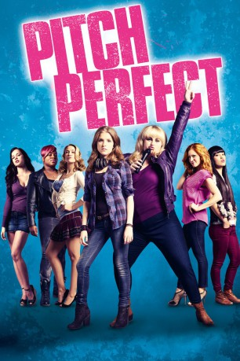

gesehen am 10.09.2015
gesehen am 10.09.2015Alternativ: Pitch Perfect gesehen am 10.09.2015
 
 IMDB-Wertung: 7.2 / 10
IMDB-Wertung: 7.2 / 10  Metascore:
Metascore: 
Beca lässt sich viel lieber von der Musik aus ihren Kopfhörern berieseln als ihren Mitmenschen zuzuhören. Und auch die Leute an ihrem neuen College findet sie alles andere als prickelnd. Zu keiner Clique scheint sie richtig zu passen. Schließlich landet sie - nicht ganz freiwillig - in der Mädchen-Gesangsgruppe The Bellas. Und in dieser wild zusammengewürfelten Truppe aus frechen, süßen und total verrückten Mädchen entdeckt Beca plötzlich, dass sie tatsächlich singen kann. Mehr noch: Es dauert nicht lange, da hat Beca aus dem wenig spektakulären Ensemble eine fetzige Band mit supercoolem Song-Repertoire gemacht. Durch den rasant ansteigenden Spaß-Faktor haben Beca und die Girls sogar den Mut, die Jungs an ihrem College zu einem Auftrittswettbewerb herauszufordern. Und spätestens beim mitreißenden Performance-Showdown wissen wir: Es kann nur einen Champion geben...
Jahr: 2012
Dauer: 112 Minuten
FSK: 0
Land: USA Studio: Universal PicturesTonspuren: DTS - ,
Untertitel: Deutsch,
Auflösung: 1080p (1920x1040) Größe: 6952 MB
Regisseur: Jason Moore
Drehbuch: Kay Cannon, Mickey Rapkin
Soundtrack: Christophe Beck, Mark Kilian
Darsteller:
 Anna Kendrick als Beca
Anna Kendrick als Beca Brittany Snow als Chloe
Brittany Snow als Chloe Anna Camp als Aubrey
Anna Camp als Aubrey Utkarsh Ambudkar als Donald
Utkarsh Ambudkar als Donald Elizabeth Banks als Gail
Elizabeth Banks als Gail John Michael Higgins als John
John Michael Higgins als John John Benjamin Hickey als Dr. Mitchell
John Benjamin Hickey als Dr. Mitchell Freddie Stroma als Luke
Freddie Stroma als Luke Lauren Gros als RIAC Representative #1
Lauren Gros als RIAC Representative #1 Tyler Forrest als High Note #1
Tyler Forrest als High Note #1 Joe Lo Truglio als Clef #1
Joe Lo Truglio als Clef #1 Donald Faison als Clef #4
Donald Faison als Clef #4 Judd Lormand als Emcee at Semi-Finals
Judd Lormand als Emcee at Semi-Finals Christopher Mintz-Plasse als Tommy
Christopher Mintz-Plasse als TommyDatei: X:\3-Trilogie(N-Z)\Pitch Perfect\Pitch Perfect (2012, FSKo.Al., 1920x1040).mkv seit 22.03.2015
Festplatte: HD Collection-3(N-Z)-6(A-Z)
 Alle Filme aus Gruppe '3-Trilogie(N-Z)\Pitch Perfect'
Alle Filme aus Gruppe '3-Trilogie(N-Z)\Pitch Perfect'